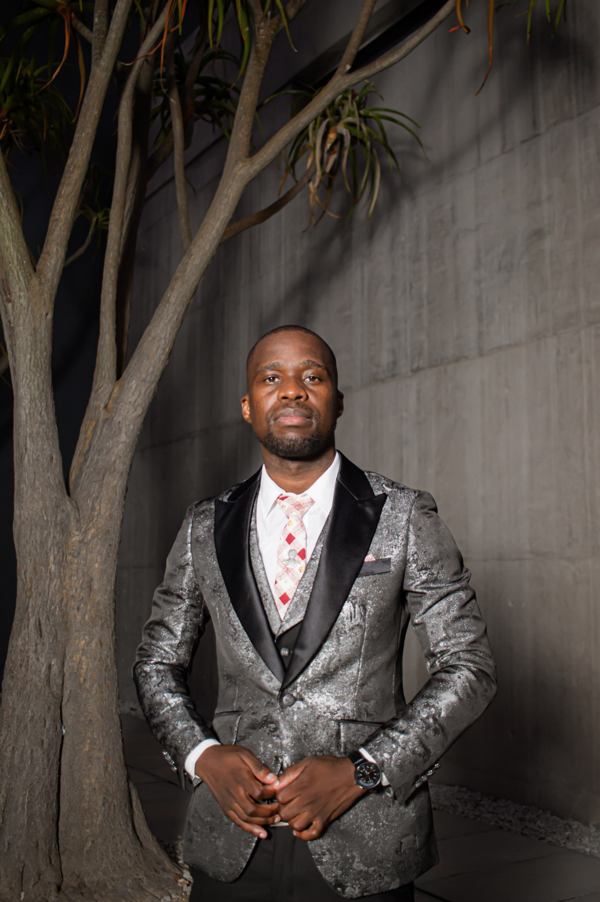

Data & Information Management
Data capture and processing, validation, quality, integrity and information management.
INFORMATION SYSTEMS | DATA & BUSINESS ANALYSIS | TECHNOLOGY
Hello, I'm
Information Systems & Technology Professional
I connect data, systems and business requirements to create practical insights, improve processes and support better decisions.

ABOUT ME
I'm an Information Systems and technology professional with over five years of combined experience across data management, information systems, business processes, reporting and technology-enabled operations.
My work brings together analytical thinking, technical understanding and clear communication. I enjoy analysing business and data requirements, working with SQL databases and ERP systems, validating information, investigating discrepancies and presenting findings that stakeholders can act on.
I’m also passionate about teaching, mentoring and helping people build confidence with technology.
CORE COMPETENCIES
A cross-functional foundation spanning data, systems, business processes and technology.
Data capture and processing, validation, quality, integrity and information management.
Microsoft Excel, Power BI, operational reporting, trend and exception analysis, and visualisation.
SQL, database design and relationships, ERP systems and enterprise applications.
Requirements gathering, process analysis, workflow mapping, functional validation and documentation.
Accuracy and completeness checks, error identification, requirements-based testing and process compliance.
Technical communication, coaching, collaboration, problem-solving and prioritisation.
PROFESSIONAL JOURNEY
Roles across higher education, information management, reporting and technology-enabled operations.
Emeris · Sandton Campus
Deliver practical teaching and technical support across information systems, databases, enterprise application development and computer networks, with emphasis on data, system functionality and requirements.
IIE Rosebank College · Nelson Mandela Bay Campus
Managed operational information and reporting involving data validation, analysis, stakeholder requirements and information quality.
IIE Rosebank College · Nelson Mandela Bay Campus
Delivered practical work across database management, ERP systems, systems analysis and web development.
Nelson Mandela University
Coordinated digital communications, online content, promotional materials and outreach activities with internal stakeholders.
Nelson Mandela University · Innovation Office
Supported information management, data processing, validation, technology assessment and process compliance in a multi-stakeholder environment.
EDUCATION
A multidisciplinary academic background across information systems, business, finance and science.
Nelson Mandela University
Nelson Mandela University
Nelson Mandela University
University of KwaZulu-Natal
University of KwaZulu-Natal
LET'S CONNECT
I'm happy to connect about technology, data, business analysis, information systems, teaching and professional opportunities.